第15章 长线趋势线
前一章我们讨论了中线趋势线，并提到了等差和半对数坐标系中的趋势线会有所不同，同时也提到对一般的短线和中线趋势而言，两种坐标系之间的差异并不重要。但是，对于长线趋势，这种差异就非常重要（见图15-1～图15-20）。
如果查阅大量跨度超过10年的等差月线图，就会发现大部分交投活跃、投机性强的个股，在上涨时趋势往往会加速 。这些个股一开始缓慢上涨，但渐渐会形成非常陡峭的涨势，直至长线顶点。由于连接最初缓慢上涨阶段的两个低点形成的趋势线较为平坦，因此这些个股的走势往往会高悬于其上，而在它们触顶反转后（可能是长线反转），还没触及趋势线跌幅就已经较为显著了。
那些在等差图上（长线）涨势体现为加速 上升曲线的股票在对数图上会体现为直线 。因此，这些股票在对数图上的长线趋势线会更快被打破，且被打破时的价格也更高一些。如果是这类股票，对数图给出的信号相对更加准确。
但还有其他一些股票，主要是投资型股票或半投资型股票，往往会以对数图中的直线趋势上涨。爱迪生联合电气公司、通用汽车公司和利比-欧文斯-福特玻璃公司（Libbey-Owens-Ford Glass）的股票就是这样。（这类股票在对数图中的下降趋势显示为减速的下降曲线。）还有第三类股票，主要是高评级优先股，即便是在等差图中，其上升趋势线也呈现出圆顶或减速的形态。因此，有些股票的牛市趋势线落在前面两类股票的趋势线之间。也就是说，这类股票的曲线在等差图中向上弯曲（与直线渐行渐远），而在对数图中则向下弯曲（穿过直线）。（编者按：在计算机时代很容易获取数据，有许多分析软件可以轻松切换两种图。许多桌面应用软件和互联网网站都有这个功能（参见附录B“资源”）。）
以上这些都可能令读者打退堂鼓。有些股票这样，有些股票那样，有什么可以帮我们进行甄别么？答案是你需要研究你感兴趣的那些个股的历史。即使牛熊市交替，大多数股票也不会改变它们的股性和技术特征。比如说通用汽车公司，很有可能在下一轮长线涨势中复制前一上涨周期中的（等差图中的）直线上涨轨迹。（第10版编者按：预计通用汽车在下跌之后会维持之前的股性，我们拭目以待。）
但是，从很长的周期来看，有些股票确实会改变。有些刚上市时被认为极具投机性的股票可能会随着其在实体经济中地位的提高变得越来越具投资价值。这些股票的上涨趋势将渐渐从上弯曲线变成直线，最后变成减速曲线。而一些老牌公司则可能失去其地位和投资级别，从投资类变成投机类。但是总的来说，长线形态往往会重复上演。
如果你保留一套自己的手工绘制的月线图，你可以选择你愿意选择的标度。不过，大部分研究技术图像的人宁愿购买他们所需要的长线的图像，因此，除了他们自己有可能制作图像的股票之外，他们还可以对更多的股票有深远的了解。如果想用合理的价格买到概括全面的月线图的集成，那么只有算术标度的图像可供选择，你也许不得不用它们来满足你的各种需要。（编者按：现在这不再有必要了，因为已经有很好的软件和网站可以利用。见附录B。）稍许做一些试验，你会发现，在许多正常牛市趋势线为坡度陡化、偏离一条直线的股票上，一条建筑师的法国曲线板可以用来绘制漂亮的主要趋势的向上趋势线。
对长线趋势线技术意义的考验和前文所述对中线趋势线的考验基本一样。但是，对趋势线被穿透的判断要稍微多留一点余地。具体还是要靠经验。
关于构筑长线牛市趋势线还有一个要点：最有用的趋势线并不始于前一个熊市的最低点，而是随后的中线低点。牛市一开始的建仓阶段通常较为平缓，且耗时较长。因此，如果从熊市的最低点开始画第一条趋势线的话，它会过于水平，不能预示真正的牛市已经到来。本章有几幅图可以说明这一点（编者按：特别是图15-14）。这条规则也适用于很多始于区域形态的中线走势。以头肩形态为例，真正的中线趋势线往往始于右肩，而不是头部。
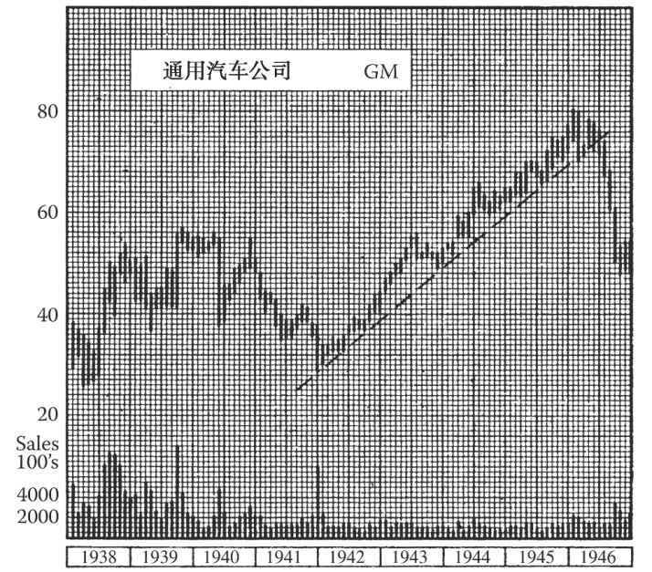
图15-1 在这张等差月线图中，通用汽车公司股价走出了一条直线牛市趋势线，其1941年低点为28⅝美元，1946年高点为80⅜美元
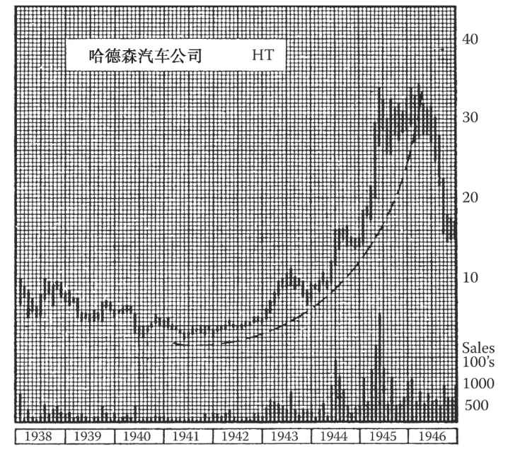
图15-2 这张图上，哈德森汽车公司股票（一只投机性颇强的股票）走出了一条上弯曲线。请与通用汽车公司走势比较，其1941年低点为2⅝美元，1946年高点为34美元
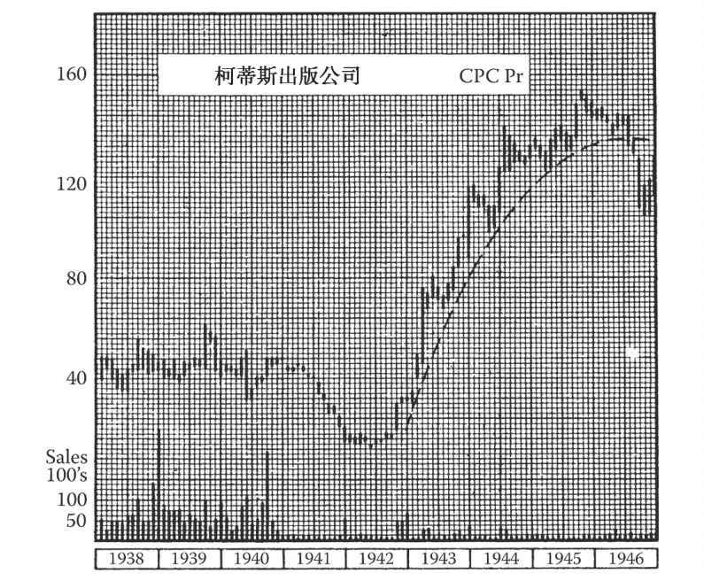
图15-3 这张图展示了一只典型的高评级优先股在长线牛市趋势中的下弯上涨曲线。柯蒂斯出版公司的优先股价格在1942年低点为12美元，1945年高点为154美元
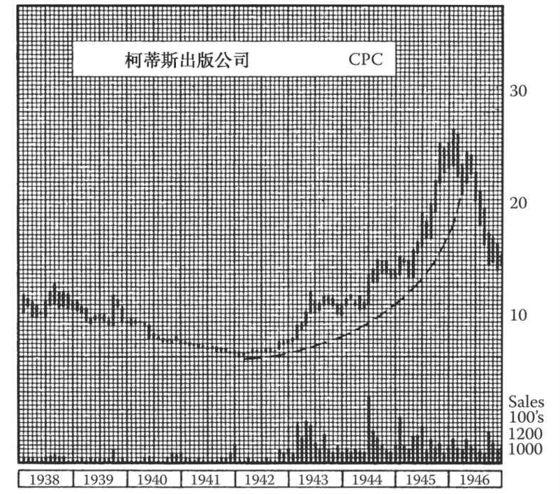
图15-4 此图展现了柯蒂斯出版公司普通股加速上涨的趋势。该股在1942年的低点为3/8美元，在1946年的高点为26美元
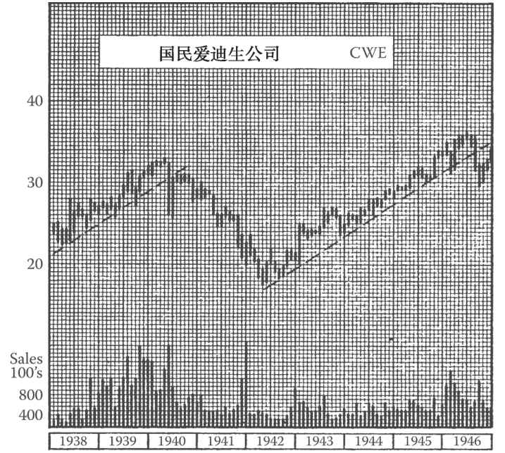
图15-5 国民爱迪生公司的股票是保守投资型的公用事业股。图中，该公司股价在长线牛市中走出了单边上涨趋势。该股在1942年的低点为17⅜美元，在1946年的高点为36⅛美元。杠杆是影响趋势的一个重要因素
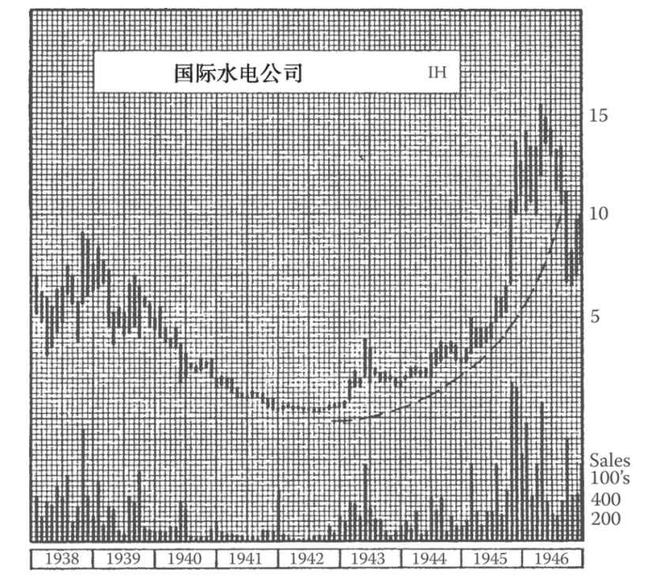
图15-6 国际水电公司的股票是小盘低价公用事业股。该股在1942年的低点为1/4美元，在1946年的高点为15?美元
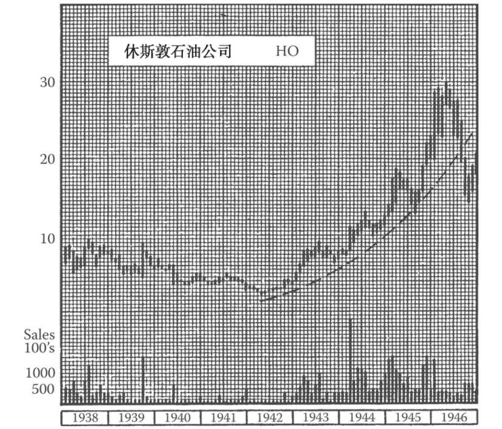
图15-7 休斯敦石油公司的股票是投机型石油股。该股在1942年的低点为2¼美元，在1946年的高点为30美元。请对比该图与图5-8
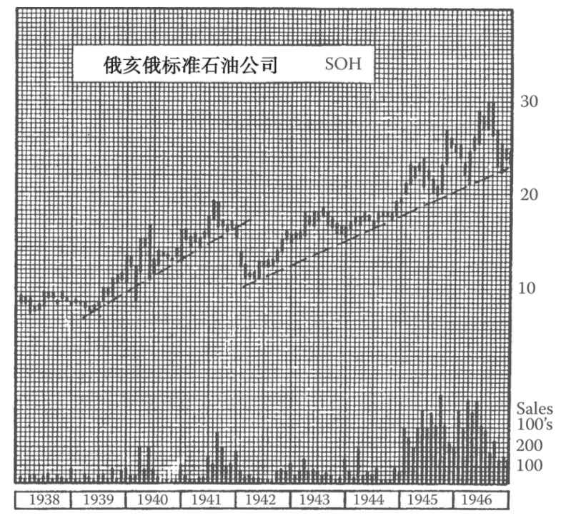
图15-8 俄亥俄标准石油公司的股票是投资型石油股。图中，该股走出单边上涨趋势，1942年的低点为10⅛美元，1946年的高点为30美元。请注意趋势线在1948年之前都未被击穿
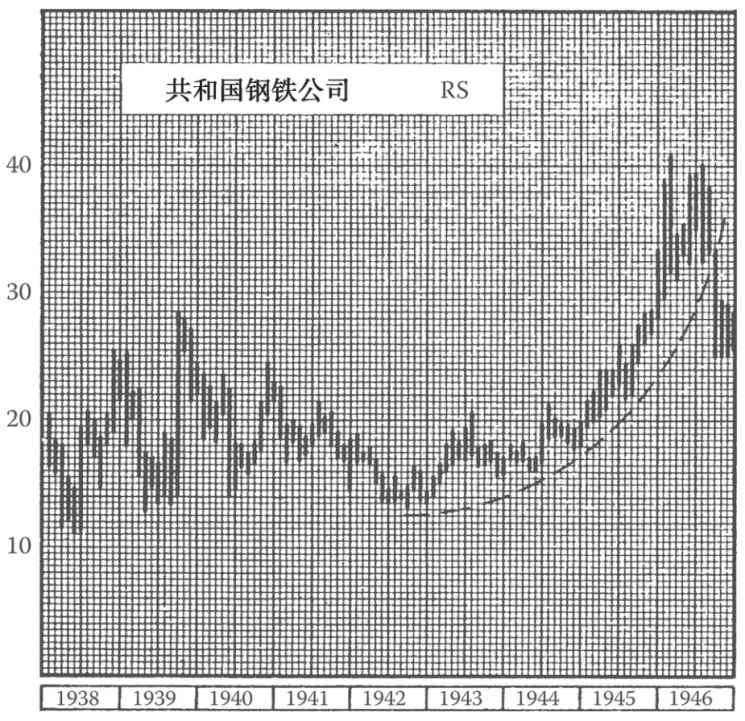
图15-9 钢铁股在长线升势中往往表现为投机性上涨或加速上涨。共和国钢铁公司股价在1942年的低点为13⅜美元，在1946年的高点为40⅞美元
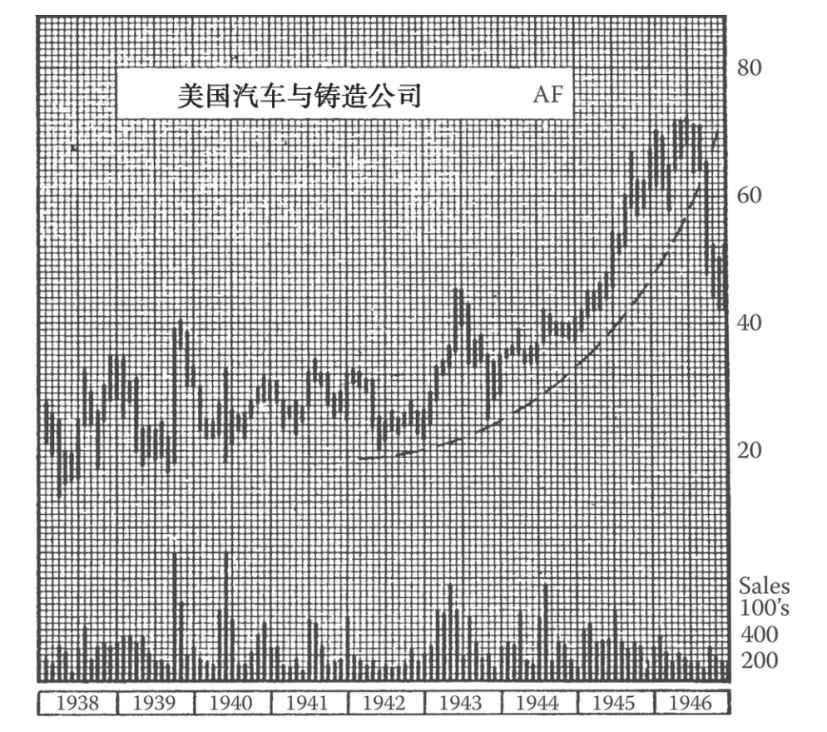
图15-10 重工业股的长线涨势往往会向上弯曲。美国汽车与铸造公司股价在1942年的低点为20美元，在1946年的高点为72⅜美元
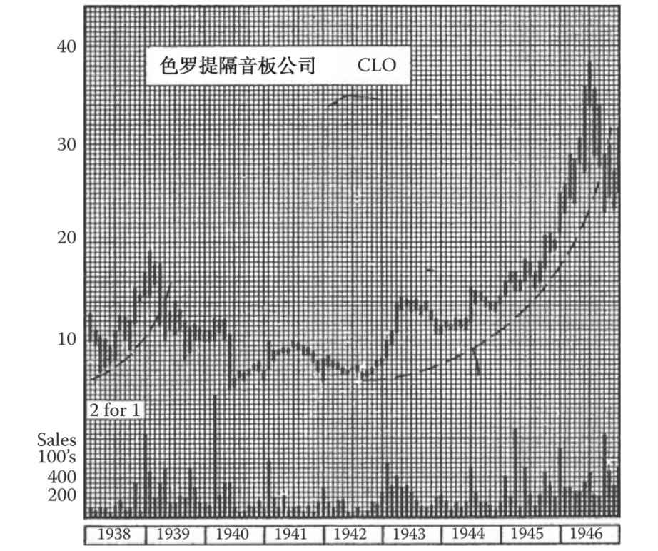
图15-11 色罗提隔音板公司的股票是低价建筑类股。该股在1942年的低点为6⅛美元，在1946年的高点为38⅛美元
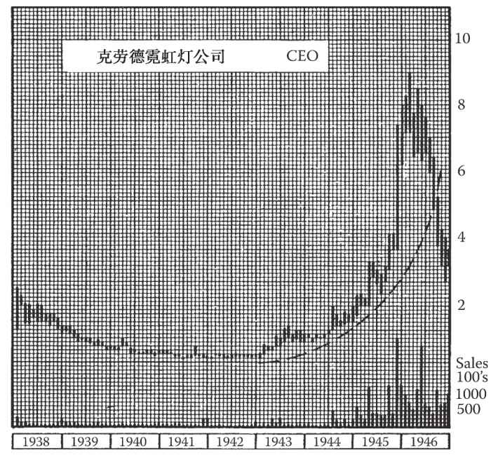
图15-12 克劳德霓虹灯公司的股票为高投机性低价股，在场外交易所交易。该股在1942年的低点为1/8美元，1946年的高点为9美元
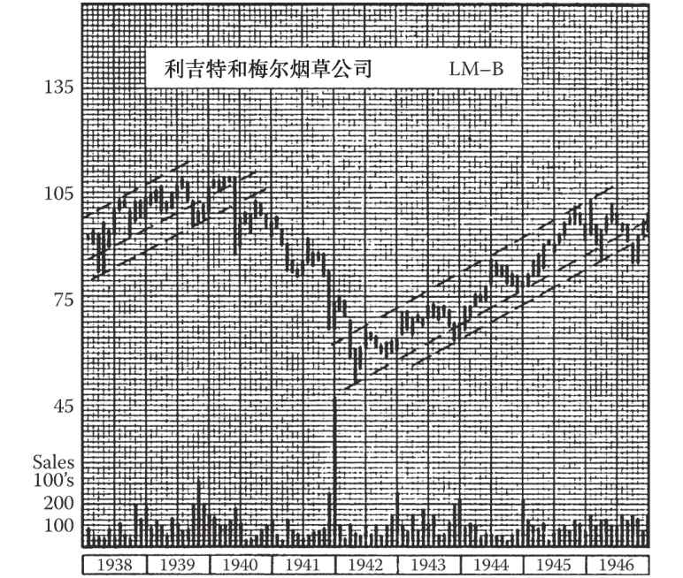
图15-13 利吉特和梅尔烟草公司的股价走势呈现出投资性的特点。该股在1942年的低点为50½美元，在1946年的高点为103½美元。请注意图中的双重趋势线
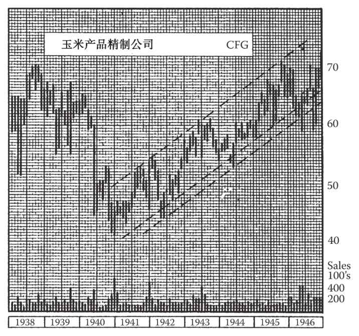
图15-14 高评级食品类股（玉米产品精制公司）的走势与烟草类股相似。该股在1940年的低点为40¼美元，在1946年的高点为75¾美元
15.1 长线跌势
对于技术分析师来说，非常遗憾的是，他们基本无法对熊市中的个股画出具有实际意义的长线趋势线。1929～1932年的熊市是一个例外，在这段时期，我们能在众多个股（以及平均价格指数，下文会讨论）的等差坐标图上画出直线趋势线。但除此之外，不论在等差坐标图还是半对数坐标图上，我们都几乎不可能找到具有预测意义的熊市趋势线。
熊市趋势一般 比牛市趋势陡峭（因为熊市持续时间平均只有牛市的一半），而且呈现出加速下跌或向下弯曲的特征。
总而言之，技术派不能寄希望于长线趋势线来预判熊转牛的时机。但这并不是说我们就不必在长线跌势中画出趋势线。如果我们不对熊市趋势线抱过多期望，它们反而可以提供一些关于市况可能转变的线索。
股市活动的研究者，如果对他的研究所带来的金钱方面的结果毫不在乎，就会发现熊市趋势线是一个引人入胜的探讨领域。它们有一些奇怪的动作，尽管它们在预测实际主要趋势的转变上没有实践的功用，而且表现得不着边际。当实际价格趋势在几个月或几年之后跟上它们的时候，它们有时候会有令人惊讶的反应（至少似乎产生了某种很难看出来的市场行为）。不过，尽管很有趣，这样的效果就我们现有的知识而言，是不确定和无法预测的。（编者按：这个事实也许会延续到将来，被认为是费尔玛最后定理（Fermat’s Last Theorem）一类的东西。在21世纪，我们目前的知识并不比迈吉的时代前进多少。）
不过我们必须提醒大家，熊市最后阶段的中线趋势线可以给出长线熊市结束的信号，这一点前文已有阐述。
15.2 长线趋势通道
在等差坐标图上为长线趋势绘制折返线和趋势通道时，我们遇到了另一个难题。股价在长线牛市中走得越高，振幅就越大（中线和短线都是如此），因此趋势通道也会越来越宽。折返线往往不与基本趋势线保持平行（假设我们能够画出可靠的基本趋势线），而是远离该线。偶尔，某只个股能够形成一条界线清晰的长线趋势通道，但大多数个股不能。
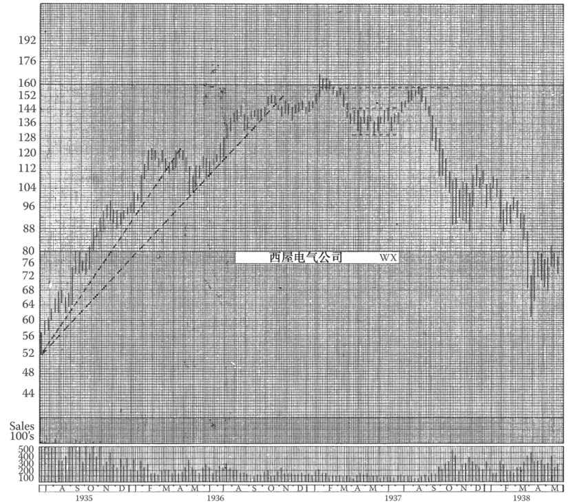
图15-15 如果股价反抽至坡度很陡的上升趋势线，那么很可能创新高。本图是西屋电气公司的周线图，请注意1936年8月的反抽。第2条坡度稍小的趋势线代表真正的牛市趋势。此外，1936年2～4月的股价形态不是真正的长线双顶反转形态，因为两个高点之间的跌幅仅达到顶部价位（约122美元）的10%。图8-21是该股的日线图，可以看到该股1937年最终的顶部反转形态。
本图中，该股在1937年4～6月走出了一个大箱体形态，请注意箱体被突破时及后续上涨时的成交量非常清淡，这是长线趋势转熊的信号。股价于8月达到了箱体的最小上涨目标位，之后便开启了漫漫熊途。
通常情况下，我们无法画出具有预测作用的长线下降趋势线。1929～1932年出现过直线熊市趋势线，这让很多技术派认为在每一轮熊市中都可以找到类似的趋势线，但这是个特例
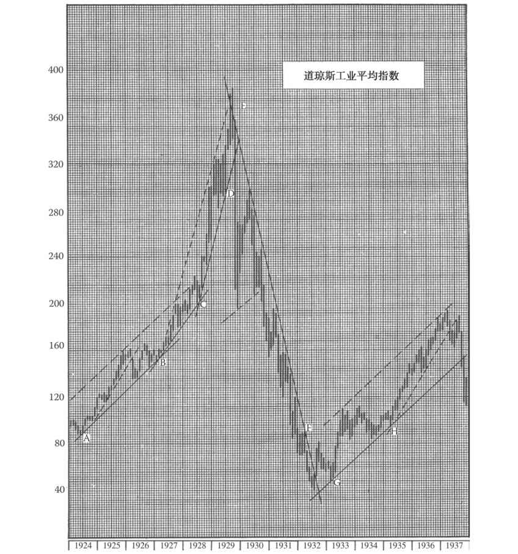
图15-16 1929～1932年是唯一一轮能够绘制出直线长线下降趋势线的熊市。请观察图中道琼斯平均工业价格指数14年里的支撑位和阻力位。每一波反弹都止步于前期的低点。每一波下跌都止步于1924～1929年牛市的一个整固区域。请观察1937年的顶部
资料来源：Market Research公司，见http://wwwbarchart.com 。
在许多情况下，半对数坐标系可以纠正牛市中等差坐标系的“通道扩大”效应，但熊市中的相反效应却不能通过变换坐标系来纠正。
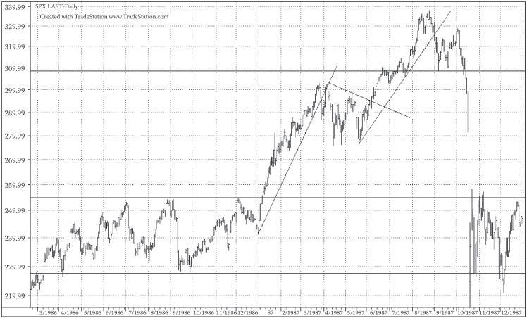
图15-17 这张图展示了1987年标准普尔指数暴跌的情形。从图上可以清楚地看到，这轮暴跌发出了多个信号，第1个就是在8月末股指击穿长线趋势线（幅度超过了2%）。一旦出现这种情况，投资者就应极其谨慎地关注市场。随着获利盘的出逃和大盘短期急跌现象的增多，市场情绪急转直下，最终引发大崩盘（10月10～20日）。当股指于4月击穿趋势线（幅度超过2%）时，不少趋势交易者会离场，但他们随后会在6月补回多头仓位。利用关于趋势线突破幅度的“2%～3%法则”、基准点法及渐进止损法（见第27～28章），投资者可以避免许多不必要的损失
15.3 平均指数的趋势线
上一章里关于个股中线趋势线的内容也都适用于平均指数。实际上，大盘平均指数的走势比个股更规则，因此其趋势线也更符合相关法则。出现这种现象的原因可能是，大多数平均指数是由成交活跃、知名度高、股东分散的个股组成，这些个股的走势从技术角度看一般都很“正常”。另一个原因是，在计算平均指数的过程中，个别成分股的“异动”被平滑掉了，因此平均指数能更准确、更稳定地反映经济发展趋势。
任何情况下，道琼斯工业平均指数、道琼斯铁路业平均指数、道琼斯股价综合平均指数、纽约时报50指数、标准普尔90指数等平均指数的走势都很符合趋势线法则。（编者按：这句提到的指数大都已经过时。当前最能代表大盘的也许是标准普尔500指数。）
因为这些指数的走势（特别是中线走势）很符合趋势线法则，所以在分析指数走势图时，为可疑突破留出的余地更小。虽然我们要求个股突破中线趋势线3%才算有效突破，但对于平均指数，只要突破幅度达到2%就可确认突破信号。
有经验的交易者都知道，应当时刻关注大势。顺势操作远比逆市操作容易。
编者按：平均指数的趋势线与交易
自本书第5版出版以来，已有众多平均指数问世，包括标准普尔100指数和标准普尔500指数、罗素2000指数等。各机构之所以纷纷推出新指数，是因为一旦这些指数被广为接受，就能为创设者带来巨大收益。标准普尔公司和道琼斯公司向“使用”其指数的交易所收取许可费。附录B“资源”中列出了一些可查询指数的网站，读者还可从《华尔街日报》《巴伦周刊》《投资者每日商报》等媒体获取指数信息。在线券商和财经新闻网站提供几乎所有指数及其衍生品的实时行情。附录B“资源”和网站http://www.edwards-magee.com 列出了一些这样的券商和网站。
到21世纪初为止，除了道琼斯指数，最重要的股票指数还有标准普尔500指数、标准普尔100指数和纳斯达克指数。实际上，这些指数足以用来分析及预测经济走势，因此它们是良好的替代性投资标的，衍生出了期权、期货等。一些人会将罗素2000指数也纳入这份清单。这些指数旨在满足道琼斯平均指数未充分满足的需求。
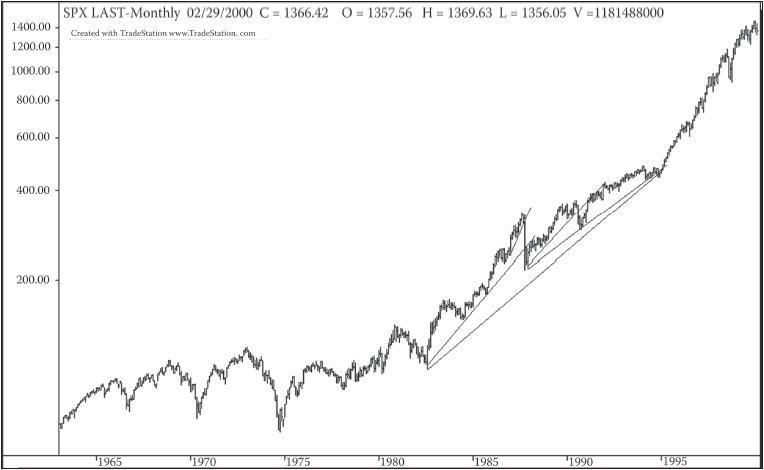
图15-18 这张图展现了标准普尔指数的长期走势。事后看来，尝试“选时”似乎是徒劳无益的。投资者必须牢记，当股价暴跌时，个人及企业往往恰巧急需短期流动性（即现金）。投资者还须记住1965～1982年的市场表现（如第4章表4-2“道氏理论的113年模拟交易记录”所示）
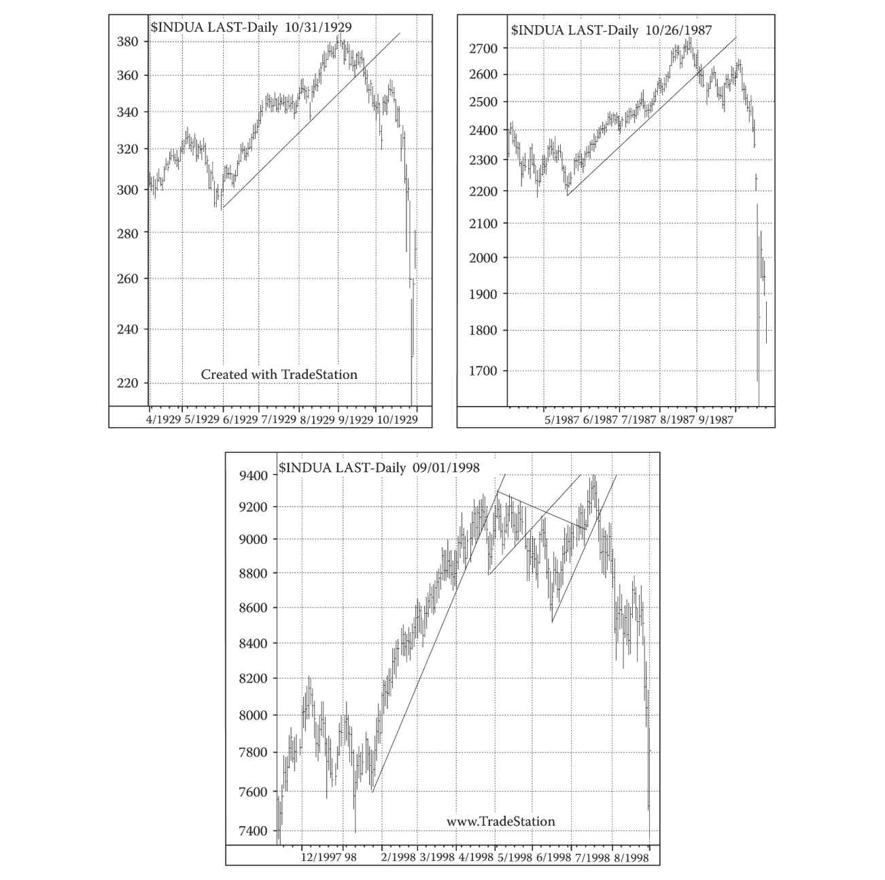
图15-19 这3幅图展现了道琼斯工业平均指数1929年、1987年、1998年的牛市顶部。请注意这3次崩盘都发生在重要趋势线被有效跌破之后（通常是大约3个月的趋势线被跌破，幅度达到2%以上），有时还伴随着反转形态。在所有的历史性顶部区域，都有股指跌破重要趋势线后试图恢复原有趋势的迹象，原因是多头尚未死心。不过历史已经反复证明，在重要趋势线被跌破后，最好的做法是对冲或离场
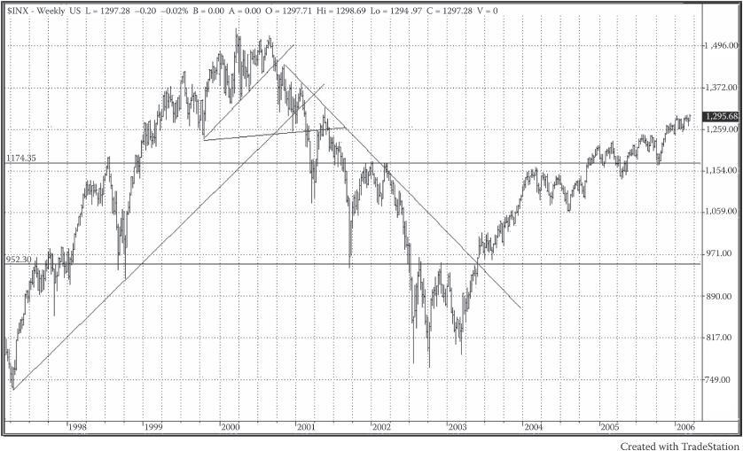
图15-20 标准普尔指数在20世纪90年代的牛市顶部比道琼斯指数的顶部清晰得多，趋势线被逐一跌破。当多头还对道指涨到36000点抱有幻想时，标普指数已经跌破关键趋势线，发出长线转熊信号。这个顶部原本可能呈现为圆顶，但逐渐发展成了一个超级复杂的形态，你甚至能在其中看到头肩顶。本版编辑认为我们这代人不太可能再次见到如此复杂的顶部了。在牛市顶部，贪婪而幼稚的投资者疯狂加仓，但其实只要用一把尺子在图上比一下，就能挽救自己的财富。面对甚嚣尘上的炒作（“道指36000点不是梦！”），投资者需要冷静分析，果断离场
这么多的市场指标也带来了一个新问题，即道琼斯指数是否还足以代表整个大盘。这方面的研究很有限，而我认为，要判断大盘趋势，需要观察道琼斯工业指数、标准普尔500指数以及纳斯达克指数。
15.4 21世纪的平均指数交易
我在第8版新增章节及注释中已指出，在现代科技的支持下，投资者当今除了可交易个股外，还可以交易平均指数，这是一个非常有意义的创举。迈吉认为，平均指数能提供个股通常缺少的“技术平滑性”（technical smoothness）。从直觉上看确实如此。毕竟，正如移动平均数能够平滑数据，一篮子股票的平均价应能降低波动性。当然，“覆巢之下安有完卵”，大盘暴跌时个股难免遭殃。
本章展示了几个遵循迈吉的建议对平均指数进行交易的详细案例。让我从这两个角度展现它们：首先，暴跌与恐慌发生时的市场状况；其次，事后分析暴跌与恐慌。除了那些根本不必担心熊市的亿万富豪，普通投资者都对市场走势很敏感。2000年年初比尔·盖茨的财富净值波动达到160亿～170亿美元，这种剧烈波动是普通投资者无法承受的。
因此，普通投资者必须警惕熊市。当熊市来临时，我们必须及时离场，免受其害。
迈吉认为一旦趋势线被跌破2%，就应抛股离场，这可在相关图表中得到检验。
第9版编者按：关于趋势线的突破幅度要求（2%或3%），我认为只要突破，无论幅度大小，都应视为警报。突破可能意味着趋势即将反转或构筑持续形态。